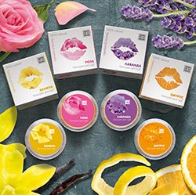
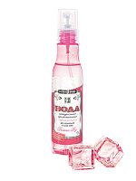
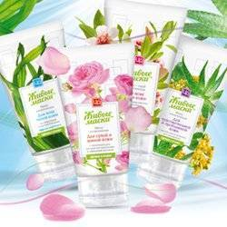

Натуральная биоактивная формула бальзамов восстанавливает
и разглаживает кожу губ, смягчает ее, защищает от пересыхания
и обветривания, дарит ощущение комфорта

Косметическая вода обладает свойствами эфирных масел, входящих в ее состав,
а благодаря более слабой концентрации активных молекул,
рекомендуется к использованию, как взрослым, так и детям
Гели косметические предназначены для ежедневного ухода за кожей,
оказывают омолаживающий, подтягивающий, противовоспалительный эффект,
способствуют разглаживанию морщин, придают коже ощущение свежести и бархатистости

Косметические маски изготовлены на основе лекарственного сырья,
фруктов, овощей, с добавлением эфирных масел.
Маски с растительными пастами – это новый подход в косметологии